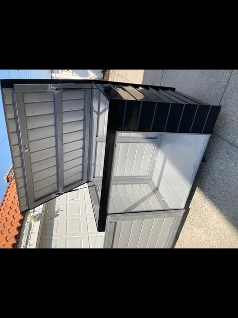
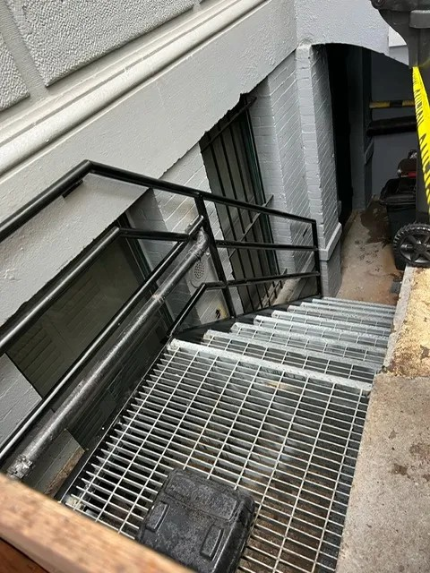

Why Brooklyn Residents Trust Local Steel Fabricator Companies
Proudly serving Brooklyn and the surrounding communities.
Steel Masters NYCProudly serving Brooklyn and the surrounding communities.
Steel Masters NYCTrust is earned slowly and lost quickly in the construction trades, and nowhere is that more apparent than in Brooklyn's steel fabrication market. Property owners who have experienced the frustration of out-of-town contractors misquoting jobs due to unfamiliarity with local requirements, or delivering substandard metalwork that fails inspection have learned an expensive lesson: local expertise is not a luxury — it is a requirement. Brooklyn's unique combination of dense urban job sites, borough-specific inspection culture, and an extraordinarily varied building stock demands fabricators who work here every day and understand what that means. The companies that have earned lasting client trust in Brooklyn have done so through consistent, quality work delivered on time and at the quoted price.
Steel Masters NYC has been serving Brooklyn as a steel fabricator since 1972 — more than five decades of fabricating and installing metalwork on Brooklyn's most demanding job sites. From custom steel stairs in Bed-Stuy brownstones to Economaster trash bin enclosures on commercial strips in East Flatbush, the company has built its reputation on the kind of consistent, quality-first work that generates repeat clients and referral business across Kings County. For Brooklyn property owners who want a fabricator with a proven track record, Steel Masters NYC delivers the local credibility that newer operations simply cannot replicate.
A steel fabrication company that has operated in Brooklyn for decades has something no newcomer can buy: a verified history of completed projects, satisfied clients, and survived inspections. Property owners can speak to neighbors, check public records of prior Brooklyn projects, and find consistent client feedback that reflects actual performance over time. Steel Masters NYC, operating since 1972 in Brooklyn's 11212 ZIP, has accumulated a portfolio of work spanning every type of NYC property — pre-war residential, commercial retail, industrial loft, and new construction. That breadth of experience is directly relevant to any new project, because the team has likely encountered and solved a version of your specific challenge before. steel security cages
See what Brooklyn property owners say about our cellar door process

Local knowledge has real dollar value in New York City construction. A Brooklyn-based steel fabricator understands how to structure project documentation to avoid common rejection triggers, and maintains relationships with local steel suppliers that result in better material pricing and faster delivery. These advantages translate directly into lower project costs and shorter timelines for Brooklyn property owners. Out-of-borough contractors, even experienced ones, face a learning curve with NYC's construction ecosystem that often results in unexpected fees, resubmission delays, and overtime costs. Choosing a local steel fabricator in Brooklyn from the outset eliminates most of these variables.
The projects that consistently earn the highest client satisfaction ratings in Brooklyn's steel fabrication market are those involving safety-critical elements: sidewalk cellar doors, guard railings, roof fencing, and structural steel alterations. These are not decorative applications — they are components where failure has direct consequences for people and property. Clients who hire Steel Masters NYC for these applications and experience a flawless installation process — on-time delivery, precise fabrication, clean site work, and first-pass inspection approval — become long-term clients who return for every subsequent metalwork need. The company's experienced iron works staff ensure that every safety-critical project is treated with the rigor it demands. metal fabricators Brooklyn

East Flatbush and Flatbush are neighborhoods where multi-family residential properties and commercial ground-floor retail sit side by side, creating a steady demand for the full range of steel fabrication services. Property owners and building managers in these communities have learned through experience that local fabricators like Steel Masters NYC understand the specific building typologies and installation requirements that apply to this part of Brooklyn. The ability to quickly dispatch a crew to a job site on Flatbush Avenue or Utica Avenue without mobilization delays, and the familiarity with the borough's inspection culture, makes local steel fabricators the practical choice for ongoing property maintenance and improvement projects.
Client reviews offer an unfiltered window into a contractor's actual performance. For a Brooklyn steel fabricator like Steel Masters NYC, consistent positive reviews reflect the company's commitment to accurate quoting, clean workmanship, and responsive communication throughout the project lifecycle. Property managers who oversee multiple Brooklyn buildings particularly value the predictability that comes from working with an established local shop — they know what to expect, the crew knows the sites, and the results consistently match the proposal. This track record of reliability is what separates a trusted Brooklyn steel fabrication company from the field of competitors advertising on the basis of price alone.
When evaluating the total cost of a steel fabrication project, Brooklyn property owners who account for the full picture — documentation costs, inspection pass rates, material quality, fabrication precision, and long-term durability — consistently find that local, experienced fabricators deliver better value than low-bid alternatives. A cellar door installation from a company unfamiliar with NYC's requirements that fails inspection requires rework, re-documentation, and additional labor — all at the property owner's expense. Steel Masters NYC's history of first-pass inspection approval across Brooklyn's ZIP codes, from 11212 to 11233, represents genuine cost savings that extend well beyond the initial invoice.
Steel Masters NYC serves customers throughout Brooklyn and Kings County, including Crown Heights, Bed-Stuy, East New York, Brownsville, East Flatbush, Flatbush, Bushwick, Canarsie, and Bay Ridge. Whether you're in Sunset Park or Williamsburg, our steel fabrication team is nearby and equipped to handle your commercial or residential metalwork project.